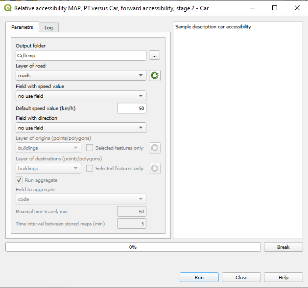
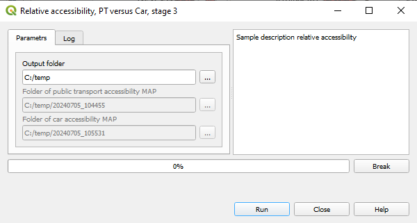

10. Relative accessibility MAP, PT versus Car¶
10.1. The necessary dataset¶
GTFS dictionary (see Building the Accessibility dictionary (pkl))
The layer of roads in the current QGIS project
The layer of buildings in the current QGIS project.
10.2. The steps of computations¶
Run the plugin and choose
Relative accessibility, PT versus Car -> Forward accessibility or Relative accessibility, PT versus Car -> Backward accessibility

Enter the parameters of computation in the dialog window:

Enter parameters following The computation steps.
Click Run to start.
#. After PT accessibility will be computed, the button Close and сalc Car accessibility will be enabled. Click it.
Enter parameters for calculation Car accessibility.
The menaing of parameters see The steps of computation.
Computation parameters that must be identical to those employed in PT accessibility computations are locked for editing
Click Run to continue.
#. After Car accessibility will be computed, the button Close and сalc relative PT versus Car will be enabled. Click it.
Enter parameters for calculation Relative accessibility.
Add a path to the PT accessibility and Car accessibility computations outcomes
Click Run to build a final report.
10.3. Report structure¶
Attribute |
Value |
|---|---|
Source_ID |
|
Time_interval_PTn |
|
Time_interval_Carn |
|
Time_interval_PTn / Time_interval_Carn |
|
Value_aggr_PTn |
|
Value_aggr_Carn |
|
Value_aggr_PTn / Value_aggr_Carn |